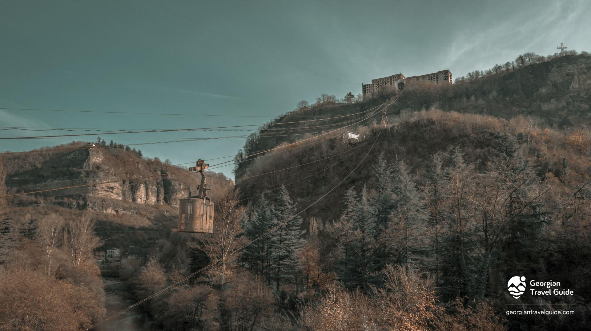
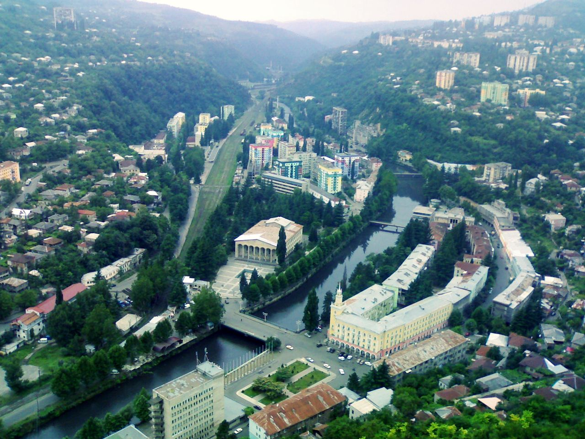

ჭიათურა იმერეთის მხარეში მდებარე მუნიციპალიტეტია. იგი ყურადღებას იქცევს უძველესი არქეოლოგიურ-კულტურული ძეგლებითა და
ულამაზესი ბუნებით. რაიონის ტერიტორია უძველესი დროიდან, ჯერ კიდევ ქვის ხანიდან იყო დასახლებული. ჭიათურაში, ძუძუანას მღვიმეშია აღმოჩენილი მსოფლიოში ყველაზე
ძველი ძაფის ნაშთები. მუნიციპალიტეტის ტერიტორიაზე, კოტიას მღვიმეში, პირველად კავკასიის არქეოლოგის ისტორიაში აღმოაჩინეს პალეოლითელი ადამიანის მთლიანი ჩონჩხი.
ჭიათურა დასახლებული ყოფილა ბრინჯაოს ხანასა და ანტიკურ პერიოდშიც. იგი განვითარებული ყოფილა შუა საუკუნეებშიც, რასაც მრავლად შემორჩენილი ციხე-სიმაგრეები და
მაღალმხატვრული ღირებულების მქონე ტაძრები მეტყველებს. დღესდღეობით ჭიათურა განვითარებული მუნიციპალიტეტია, რომლის ფორმირებაში მნიშვნელოვანი როლი შეასრულა
მდინარე ყვირილის ხეობაში არსებული მანგანუმის მადნის საბადოს ბაზაზე წარმოქმნილმა მრეწველობამ. რაიონში ფუნქციონირებს მხარეთმცოდნეობის მუზეუმი, დრამატული თეატრი,
სპორტული და სახელოვნებო სასწავლებლები და სხვა კულტურულ-საგანმანათლებლო დაწესებულებები. მუნიციპალიტეტის ეკონომიკაში მთავარ როლს ასრულებს
მრეწველობა, კერძოდ მანგანუმის მადნის მოპოვება-გამდიდრება. ჭიათურას ასევე დიდი
ტურისტული პოტენციალი აქვს, რასაც ბუნების სილამაზე და კულტურულ-ისტორიული ძეგლების სიმრავლე განაპირობებს. საოცარი კარსტული მღვიმეები, ხეობები, უძველესი
ტაძრები და ციხე-სიმაგრეები უამრავ მნახველს იზიდავს და წარუშლელ შთაბეჭდილებას ახდენს.

"ჭიათურა_შავი ოქროს ქალაქი"
გეოგრაფია
ჭიათურის მუნიციპალიტეტი იმერეთის მხარეში მდებარეობს, მდინარე ყვირილის აუზში. იგი ჭიათურის
მეორეული წარმოშობისაა.ტერიტორიის უმეტესი ნაწილი კი სახნავ-სათეს ფართობებს უჭირავს.ტყის პლატოს ჩრდილო-დასავლეთ ნაწილსა და რაჭის ქედის სამხრეთ კალთას
მოიცავს. მუნიციპალიტეტის
ძირითადი კორომები რაჭისა და ლიხის ქედების კალთებზეა შემონახული. აქაურ ტყეებში გვხვდება: ადმინისტრაციული ცენტრია ქალაქი ჭიათურა. რაიონს ჩრდილო-აღმოსავლეთით საჩხერე ესაზღვრება,
წიფელი, მუხა, რცხილა, ნეკერჩხალი, იფანი, ცაცხვი და ა.შ.ჭიათურის ტერიტორიაზე გავრცელებულია: სამხრეთით და სამხრეთ-დასავლეთით - ხარაგაული,
ზესტაფონი და თერჯოლა, დასავლეთით - ტყიბული,
კავკასიური ირემი, შველი, არჩვი, დათვი, მელა, მგელი, ტყის კატა,კურდღელი, ფოცხვერი, ბულბული, ჩრდილო-დასავლეთით კი - ამბროლაური. ჭიათურის ტერიტორია მდიდარია შიგა წყლებით, მთავარი
ჩხიკვი, ოფოფი და სხვა.ჭიათურა მდებარეობს ჭიათურის პლატოსა და მდინარე ყვირილის ვიწრო ხეობაში, მდინარეა ყვირილა.
რაიონის სტრუქტურული პლატოს ფარგლებში ტყე განადგურებულია და მცენარეულობა
ზღვის დონიდან 340-500 მეტრზე, გომი-საჩხერე-ზესტაფონის საავტომობილო გზაზე.თბილისიდან 220 კმ-ის
დაშორებით (რკინიგზით).
ჭიათურაში საკმაოდ ნოტიო ზღვის სუბტროპიკული ჰავაა, იცის ზომიერად ცივი ზამთარი და
შედარებით მშრალი, ცხელი ზაფხული. ჰაერის საშუალო ტემპერატურაა +13 °C,
იანვარი +2,4 °C,
ივლისი +23,1 °C, აბსოლუტური მინიმუმი -20 °C, აბსოლუტური მაქსიმუმი +42 °C ნალექები
1100 მმ. წელიწადში.ქალაქის ცენტრალური დასახლება მდინარე
ყვირილის ორივე ნაპირზეა და
თითქმის ყოველი მხრიდან მაღალი, ციცაბო კლდეებით შემოზღუდულ ქვაბულშია მოქცეული.
სამრეწველო უბნები მას 2-6 კმ რადიუსით ეკვრის.
ისტორია
ქალაქის წარმოშობა და შემდგომი განვითარება კი განაპირობა მდინარე ყვირილის ხეობაში არსებული მანგანუმის მადნის საბადოს ბაზაზე წარმოქმნილმა მრეწველობამ. ქალაქს საფუძველი
ჩაეყარა 1879 წელს, როდესაც აკაკი წერეთლის ინიციატივით დაიწყო მანგანუმის მადნის მოპოვება. დაარსდა ჭიათურის შავი ქვის მომპოვებელი საზოგადოება, რომელიც ახორციელებდა
მანგანუმის მოპოვებას. 1895 წელს გაიყვანეს რკინიგზა, რომელმაც ჭიათურის რკინიგზის სადგურ შორაპანს დაუკავშირა. ამ პერიოდში ჭიათურაში 6 ათასამდე ადამიანი მუშაობდა,
მანგანუმის ხვედრი წილი მსოფლიო ექსპორტში კი 50 %-ს აღწევდა. XIX საუკუნეში განაშენიანებული მხოლოდ მდინარე ყვირილის მარჯვენა მხარე იყო, ძველი ჭიათურა ცნობილი
იყო თავისი ვიწრო ქუჩებით, რომლებიც სტიქიურად, დაგეგმვის გარეშე წარმოიშვნენ. ამ ნაწილში ისტორიული განაშენიანება და ქუჩების ქსელი შემორჩენილია.
1892 წელს ინგლესელებმა, ჭიათურაში, საქართველოს ტერიტორიაზე ჩოგბურთის პირველი კორტი ააშენეს. ჩოგბურთის განვითარება საქართველოში დასაბამს XIX საუკუნის
დამლევიდან იღებს. ჭიათურაში ინგლისური ფირმა „Forward and Salinas“-ის მმართველმა ჯონ ტარსეიმ მანგანუმის ქალაქში ახალი თამაში ლაუნ-ჩოგბურთი შემოიტანა.
გამოჩენილი ინგლისელი ჩოგბურთელი და პედაგოგი იან ჰომერი, რომელიც ჭიათურაში მოღვაწეობდა თავის მოგონებებში აღნიშნავს, რომ წერეთლების ოჯახი და აკაკი წერეთელი
ადევნებდა თვალს საჩოგბურთო სანახაობას. ჭიათურიდან ჩოგბურთმა გავრცელება თბილისსა და ბათუმში ჰპოვა.

"ჭიაა თუ რა?"
ჭიათურა ქალაქად გამოცხადდა 1921 წელს. 1921 წლიდან ჭიათურაში აღინიშნება ქალაქის დღესასწაული „ჭიათურობა“, რომელსაც ცნობილი ქართველები და
ჭიათურასთან დამეგობრებული ქალაქების წარმომადგენლები ესწრებიან. 1924 წელს საქართველოს თითქმის ყველა დიდ ქალაქში დაიწყო აჯანყება საბჭოთა რეჟიმის წინააღმდეგ.
28 აგვისტოს აჯანყება დაიწყო ჭიათურაშიც. 3 დღის განმავლობაში ჭიათურლებმა შეძლეს შეეკავებინათ აჯანყების ჩასახშობად თბილისიდან გამოგზავნილი სადამსჯელო რაზმები,
თუმცა მე-4 დღეს საქართველოს ცეკა-მ ჩაახშო აჯანყება და სასტიკად გაუსწორდა გამოსვლებში მონაწილე ხალხს, დახვრიტეს 2000-მდე ჭიათურელი.
საბჭოთა პერიოდში ჭიათურა იყო რესპუბლიკური დაქვემდებარების ქალაქი და ჭიათურის საქალაქო საბჭოს ცენტრი. 1954 წელს ჭიათურაში აშენდა სსრკ-ში პირველი სამგზავრო
საბაგირო გზა, ქალაქის ცენტრსა და პერევისის სამრეწველო უბანს შორის. სამგზავრო საკიდი საბაგირო გზების რაოდენობა ჭიათურის შემოგარენში ორ ათეულზე მეტია, რაც ერთ
ერთი მაღალი მაჩვენებელია მსოფლიოში. ჭიათურის სამგზავრო საკიდი საბაგირო გზების პროექტების შედგენა და მშენებლობა ადგილობრივმა ინჟინერებმა განახორციელეს.
ამ საქმის გამოჩენილი სპეციალისტი იყო გიორგი ფანცულაია, რომლის პროექტით როგორც ჭიათურაში, ისე რუსეთის სხვა ქალაქებშიც აშენდა საკიდი საბაგირო გზები. 1964 წელს
ჭიათურა ტროლეიბუსის ხაზით დაუკავშირდა საჩხერეს. ეს პირველი საქალაქთაშორისო სატროლეიბუსო ხაზი იყო საქართველოს სსრ-ში. საბჭოთა პერიოდში გაშენდა ახალი
საცხოვრებელი უბნები, ნაგუთი და სხვა. აშენდა საცხოვრებელი, ადმინისტრაციული და საზოგადოებრივი შენობები, ქალაქის შესასვლელთან დაიდგა დიდების მემორიალი
(არქ. კ. ჩხეიძე, მოქანდაკე: ვ. თოფურიძე).
ეკონომიკა
ჭიათურა საქართველოს მოპოვებითი მრეწველობის და ამიერკავკასიაში მანგანუმის მოპოვებისა და გადამუშავების ერთ-ერთი უმნიშვნელოვანესი ცენტრია. ქალაქის მთავარი საწარმოა
ჭიათურის მანგანუმის საბადო, სადაც 3500 ადამიანია დასაქმებული. შესაბამისად, დამსაქმებელი კომპანია "ჯორჯიან-მანგანეზი" მნიშვნელოვან როლს თამაშობს ქალაქის და ქვეყნის ეკონომიკის განვითარებაში
ჭიათურა მანგანუმის კონცენტრატით ამარაგებს ფეროშენადნობთა ქარხანას. ამჟამად ჭიათურაში მოპოვებული
მანგანუმი საქართველოს საერთო ექსპორტის მნიშვნელოვანი ნაწილია. ჭიათურაში მოიპოვებენ უმაღლესი ხარისხის კვარცის ქვიშას, რომელიც საუკეთესო მასალაა შენობების
მოსაპირკეთებლად, ქალაქის მახლობლად სალიეთის მარმარილოს საბადოა, რომელიც ღია კარიერული წესით ამუშავებს წითელ, ვარდისფერ და რუხ მარმარილოს.
ჭიათურაში გადის ზესტაფონი-საჩხერის სარკინიგზო ხაზის მონაკვეთი, ქალაქში არის რკინიგზის სადგური. ქალაქზე გადის შიდასახელმწიფოებრივი მნიშვნელობის საავტომობილო გზა
ზესტაფონი-ჭიათურა-საჩხერე-გომი, რომლითაც ჭიათურა უმოკლესი გზით უკავშირდება თბილისს, შიდა საქალაქო ტრანსპორტია ავტობუსები და ბაგირგზები, რომლითაც ქალაქის
თითქმის ყველა უბანი დაკავშირებული ცენტრთან.
ჭიათურა მანგანუმის მოპოვებისა და გადამუშავების ერთ-ერთი უმნიშვნელოვანესი ცენტრია ამიერკავკასიაში . ჭიათურა მანგანუმის კონცენტრატით ამარაგებს
ფეროშენადნობთა ქარხანას. ამჟამად ჭიათურაში მოპოვებული მანგანუმი საქართველოს საერთო ექსპორტის 10%-ს შეადგენს. ჭიათურაში მოიპოვებენ უმაღლესი ხარისხის კვარცის
ქვიშას, რომელიც საუკეთესო მასალაა შენობების მოსაპირკეთებლად, ქალაქის მახლობლად სალიეთის მარმარილოს საბადოა, რომელიც ღია კარიერული წესით ამუშავებს წითელ,
ვარდისფერ და რუხ მარმარილოს, ქალაქში არის აგრეთვე საშენი მასალის, მსუბუქი და კვების მრეწველობის საწარმოები - სილიკატური აგურის ქარხანა, სამკერვალო და ბაიხის ჩაის
პირველადი დამუშავების ფაბრიკები, პურის, ხორცის, რძის და ადგილობრივი მრეწველობის კომბინატები და სხვა. ჭიათურაში გადის ზესტაფონი-საჩხერის სარკინიგზო ხაზის
მონაკვეთი, ქალაქზე გადის შიდასახელმწიფოებრივი მნიშვნელობის საავტომობილო გზა ზესტაფონი-ჭიათურა-საჩხერე-გომი, რომლითაც ჭიათურა უმოკლესი გზით უკავშირდება
თბილისს, შიდა საქალაქო ტრანსპორტია ავტობუსები და ბაგირგზები, რომლითაც ქალაქის თითქმის ყველა უბანი დაკავშირებული ცენტრთან.
საზოგადოებრივი სფერო
ჭიათურა არის ჭიათურისა და საჩხერის ეპარქიის კათედრა და რეზიდენცია. ქალაქში ფუნქციონირებს რეგიონალური ტელეკომპანია იმერვიზია, ჭიათურაში გამოდის გაზეთები:
„საშევარდნო“, „მაღაროელი“ და „ჭიათურა“ (დაარსდა 1924 წელს). ქალაქის მახლობლად არის ხუროთმოძღვრების ძეგლი, შუა საუკუნეების ციხე და გამოქვაბულები „ჯარბელა“.
კულტურა
ქალაქში არის კულტურის დაწესებულებები: აკაკი წერეთლის სახელობის ჭიათურის დრამატული თეატრი, კინო-თეატრი, რიტუალების სასახლე, მხატვრის სახლი, ჭიათურის
მხარეთმცოდნეობის მუზეუმი და კულტურის სასახლე. ჭიათურაში მოსწავლეთა კულტურულ აღზრდას ემსახურება კულტურის ცენტრთან არსებული „მსახიობთა სკოლა“, ცეკვისა და
სიმღერის სახელმწიფო ანსამბლი „ჩანგი“, ხალხური ცეკვის ანსამბლები: „მერცხალი“, „ფესვები“ და „ანსამბლი-XXI“, ქართული ხალხური სიმღერის ანსამბლი „იმერეთი“, საესტრადო
სიმღერის შემსწავლელი სკოლა „ნატვრისთვალი“, სამეჯლისო-სპოტრული ცეკვების სტუდიები: „დანს-ფორუმი“, „გრაცია“ და „ელეგანტი“.
განათლება
ქალაქში არის თბილისის სახელმწიფო უნივერსიტეტის და საქართველოს ტექნიკური უნივერსიტეტის ფილიალები, კავშირგაბმულობის განყოფილება, ნორჩ ტექნიკოსთა სადგური,
ასევე ჭიათურის სამთო მეტალურგიული სასწავლებელი. ქალაქში არის 9 საჯარო სკოლა და ერთი სკოლა პანსიონი, 1 კერძო სკოლა, 1 სასულიერო სკოლა, 1 გიმნაზია, 3 სასპორტო,
3 სამუსიკო და 2 სამხატვრო სკოლა, 13 საბავშვო ბაღი.
ჯანდაცვა
ქალაქში მოქმედებს ჯანდაცვის დაწესებულებები: ქალაქის პოლიკლინიკა, სანატორიუმ-პროფილაქტორიუმი, ამბულატორია, ჭიათურა-საჩხერის რეგიონის ინვალიდთა და
ხანდაზმულთა სამედიცინო რეაბილიტაციის ცენტრი, 5 სტომატოლოგიური კაბინეტი, ბავშვთა პოლიკლინიკა, სამშობიარო სახლი, ფსიქონერვოლოგიური კლინიკა, მასაჟის ცენტრი,
ტუბდისპანსერი, 3 ძველი და ერთი ახალი მრავალპოფილიანი საავადმყოფო
სპორტი
ჭიათურაში არის საფეხბურთო კლუბი „ჭიათურა“. მოქმედებს საფეხბურთო, სარაგბო, საკალათბურთო, საჩოგბურთო, კრივის, ძიუდოს, თავისუფალი ჭიდაობის, ბერძნულ-რომაული
ჭიდაობის, ცურვის, კარატისა და მძლეოსნობის სკოლები. ქალაქს აქვს ცენტრალური სტადიონი გათვლილი 11 700 მაყურებელზე, ასევე სარეზერვო სტადიონი გათვლილი 2500
მაყურებელზე.
ცნობილი ადამიანები
ჭიათურაში დაიბადნენ:
მიხეილ ვაშაძეთეატრისა და კინოს მსახიობი
დავით გამრეკელიმომღერალი, კომპოზიტორი
გიორგი ჭოღოშვილიმათემატიკოსი და პედაგოგი
აკაკი (კაკო) ბაქრაძეთეატრისა და კინოს მსახიობი
არჩილ გომიაშვილითეატრისა და კინოს მსახიობი
იუზა ღვალაძემეცნიერი, ფიზიკა-მათემატიკის მეცნიერებათა დოქტორი
ანზორ კავსაძედირიჟორი, მომღერალ-მგალობები
დავით კირკიტაძესაქართველოს პარლამენტის წევრი, სამართალმცოდნე
ცირა სუქნიძემის საქართველო 2009
გრიგოლ აბაშიძექართველი პოეტი და პროზაიკოსი
ჭიათურაში მოღვაწეობდნენ:
თამარ აბაშიძე თეატრისა და კინოს მსახიობი
კიტა აბაშიძე კრიტიკოსი, პუბლიცისტი, საზოგადო და პოლიტიკური მოღვაწე
ვალერიან შალიკაშვილიდრამატურგი, ჭიათურის დრამატული თეატრის ყოფილი ხელმძღვანელი
ალექსანდრე იმედაშვილიმსახიობი, ტრაგიკოსი, ჭიათურის დრამატული თეატრის ყოფილი ხელმძღვანელი
ალექსანდრე წუწუნავა მსახიობი, რეჟისორი, ჭიათურის დრამატული თეატრის ყოფილი ხელმძღვანელ
იან ჰომერი საქართველოს ჩოგბურთის ფუძემდებელი, დამსახურებული მწვრთნელი
ალექსანდრე კავსაძელოტბარი, მომღერალ-მგალობელი
გრიგოლ მუხაძეექიმი, მეცნიერული და პრაქტიკული ქირურგიის ერთ-ერთი ფუძემდებელი საქართველოში.